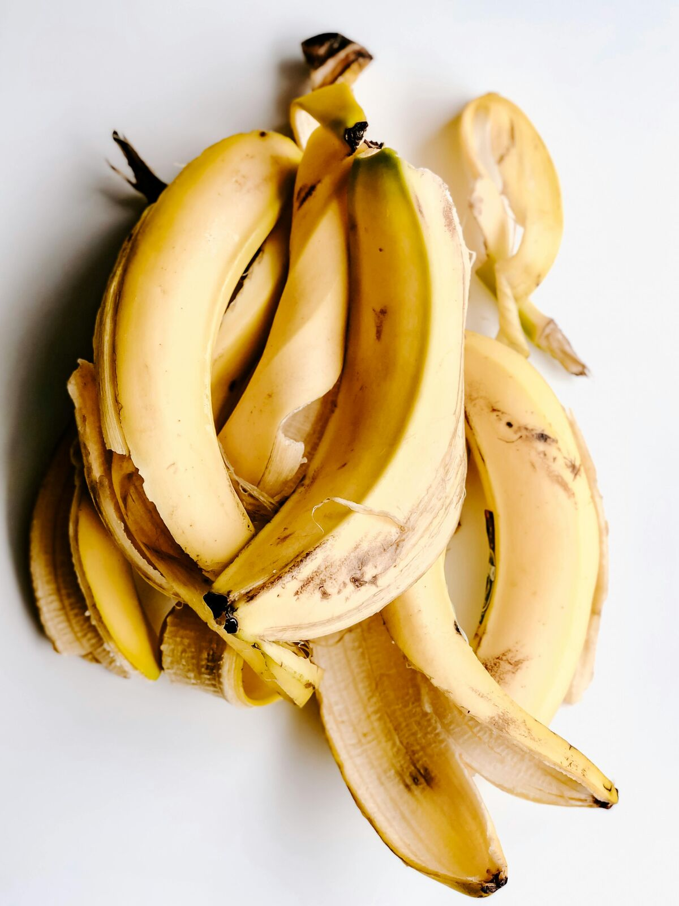

Bananas are already one of the most quietly nutritious things you can reach for — potassium for your heart, fiber for your gut, vitamin C for your skin and immunity. We know this. What most of us don't know is that a significant portion of those nutrients lives not in the fruit itself, but in the peel we've been throwing away since childhood.
Banana peels are rich in antioxidants, vitamins B6 and B12, magnesium, and potassium. They're also packed with lutein — a compound with real, documented benefits for skin and eye health. Beyond what they contain, there's something about the texture and natural oils in a fresh peel that makes it unexpectedly effective for topical use. In many parts of the world, this isn't a beauty hack — it's just common knowledge.
Here's what a banana peel can actually do.
Tone, brighten, fade scars, reduce puffiness. A fresh peel does more for your skin than most things in your cabinet.
A gentle daily massage with the inner peel supports gum health and gradually lifts surface staining.
Bug bites, sunburn, skin irritation — the peel's anti-inflammatory compounds provide real, immediate relief.
For Your Skin
This is where the peel really earns its place. The inside of a banana peel — that pale, slightly slippery surface — is rich in antioxidants and has a mild astringent quality that makes it genuinely useful for skin. Not in a vague, wellness-trend way. In a practical, tried-and-tested way.
For all of these, the method is the same: use the freshest peel you have, rub gently for about two minutes, leave the residue on for 10–15 minutes, then rinse with cold water. Cold water helps close the pores and lock in everything you just applied. This can be done daily.
A banana peel costs nothing and takes two minutes. That's the whole routine.
What if the most useful thing in your fruit bowl isn't the fruit at all — it's the part you've always thrown away?
For Your Teeth & Gums
This one surprises people. The inside of a banana peel contains potassium, magnesium, and manganese — minerals that teeth can absorb directly through the enamel. Rubbing the peel across your teeth and gently massaging your gum line for two minutes each day is one of the gentlest whitening approaches you'll find.
It won't deliver the dramatic results of a bleaching treatment, and it's not trying to. What it does is gradually lift surface staining from coffee, tea, and general daily life while supporting the health of your gums. Healthier gums mean less inflammation, which matters far more for the long-term look and feel of your mouth than whitening alone.
The research on banana peels for whitening is largely anecdotal — there aren't large clinical studies confirming the mechanism. What we do know is that the minerals present in the peel are the same ones involved in remineralisation of tooth enamel. Whether the absorption is meaningful via topical application is still an open question. As a gentle, daily habit it's harmless; as a replacement for professional dental care, it isn't.

Fresh is everything here — the nutrients in the peel begin to degrade as soon as it's separated from the fruit.
For Minor Irritations
This is perhaps the most underrated use. A banana peel has natural anti-inflammatory and antimicrobial properties, and pressing the cool, moist inside of the peel against irritated skin offers real, immediate relief — not just a placebo sense of doing something.
- Always use a fresh peel. The nutrients degrade once the banana is eaten and the peel is exposed to air. Use it immediately.
- Never refrigerate bananas or their peels. Cold temperatures accelerate blackening and break down the beneficial compounds. Keep bananas at room temperature, away from direct sunlight and heat sources.
- Rinse with cold water. After leaving the peel residue on your skin, rinse with cold water — not warm. Cold helps close pores and lock in what you just applied.
- Consistency is the whole point. One use won't do much. Daily use over two to four weeks is where results become visible — particularly for scars and skin tone.
- The riper, the better for skin. A ripe peel (yellow with some spots) contains more antioxidants than an underripe one. For warts and irritation, a less ripe peel works fine.
The best remedies don't always come in packaging.
That banana peel you've been tossing has a longer useful life than the banana itself. Two minutes, fresh peel, cold water to finish. That's the whole thing. Sometimes the simplest routines are the ones worth keeping.